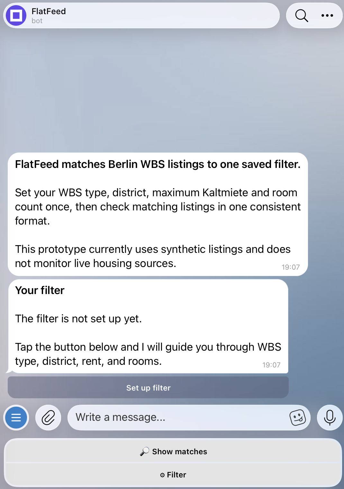
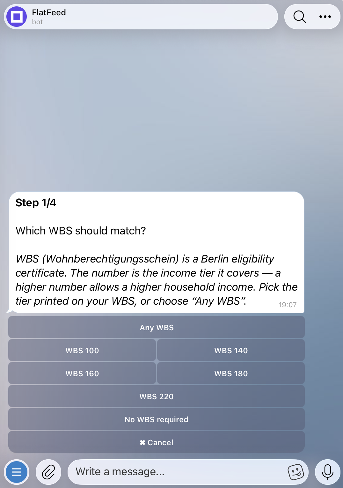
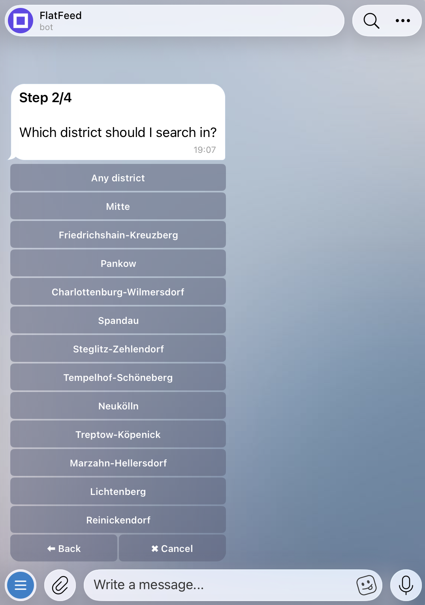
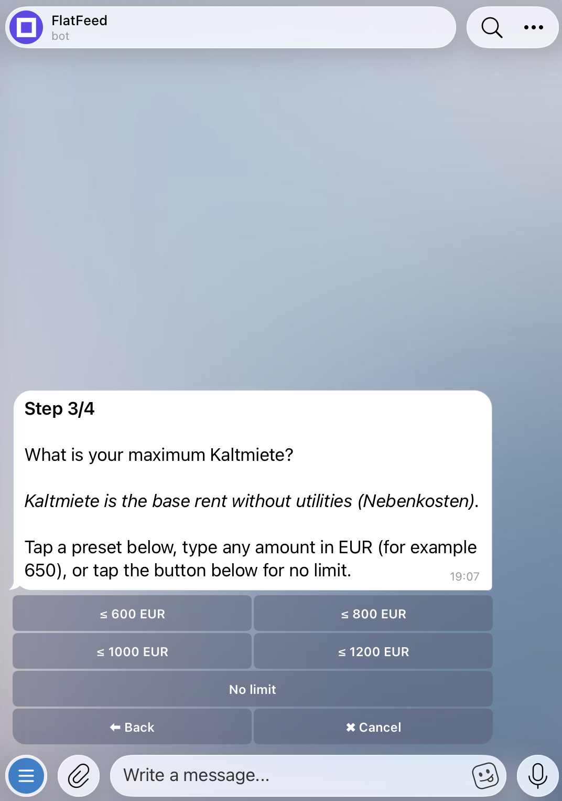
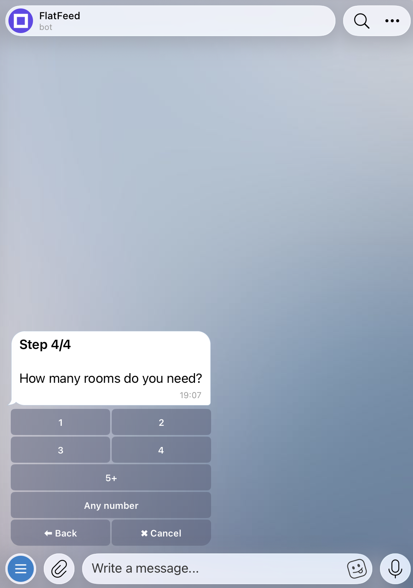
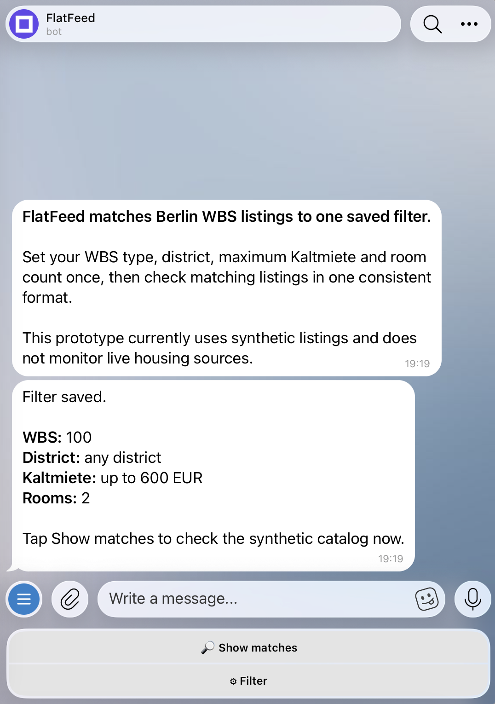
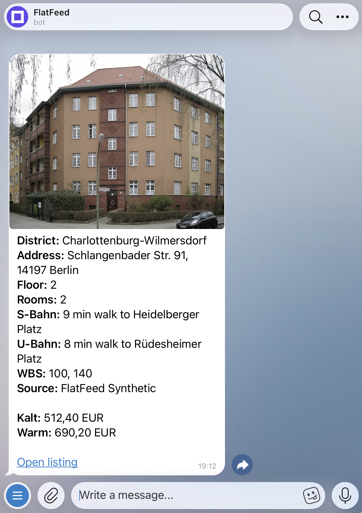

Berlin Wohnberechtigungsschein: a certificate used to qualify for subsidized housing in Berlin. apartment seekers repeat the same search across multiple websites.
Several real-estate portals let users save searches and receive alerts, but each alert
covers only its own platform. Meanwhile, housing providers are a primary source of WBS listings
and may publish them on their own websites before they reach real-estate portals. Some
providers offer only email alerts; others offer none. Users therefore repeat the same
search across several places and compare different listing formats. FlatFeed tests a
simpler flow: save your criteria once and review matching listings in Telegram.
02Product
Users can save one filter and review matching listings in Telegram.
Working Telegram prototype · Generated test listings · Rule-based matching · AI parser-quality review
01
Save one filter
Set WBS type, district, maximum Base rent, excluding operating and heating costs. and rooms once.
02
Turn listing text into structured fields
The parser extracts WBS, district, rent, rooms and the details shown on each card. Every matching rule and Telegram result depends on these fields. The demo uses one synthetic source adapter and includes no live provider adapters.
03
Match with rules
Code compares each listing with the saved criteria. If required rent or room data is missing, the listing does not match.
04
Return matches in Telegram
Users can request matches when they want. FlatFeed returns each match in a Telegram card. Background delivery can send new matches and record each successful send to prevent duplicates.
See the Telegram journey from filter setup to a matching listing.

01 / 07Open filter setup
FlatFeed opens with one clear action: set up a filter.

02 / 07Choose WBS type
Select the certificate type used for matching.

03 / 07Choose a district
Select one Berlin district or keep the search open.

04 / 07Set maximum Kaltmiete
Set the highest base rent that should match.

05 / 07Choose room count
Complete the four-field filter.

06 / 07Review the saved filter
Review or edit the criteria before checking listings.

07 / 07Review a matched listing
See eligibility, rent, apartment details and estimated walks to S- and U-Bahn stations in one card.
Photo: Bodo Kubrak · CC0 1.0 Apartment details are synthetic.
03Decisions
Three decisions kept the prototype focused and testable.
A
Use AI to audit the parser—not to decide matches
Deterministic rules still depend on correct input data. I tested whether AI could act as an independent parser check: it returned exact source evidence for each requested field, while code compared that evidence with simulated parser output. Differences were marked for review; AI never changed listing data or match decisions.
B
Use synthetic data to test mechanics
I chose generated listings to test filter setup, normalization, matching and Telegram delivery without using provider data until source access and reuse terms are clear. This tests product mechanics, but not source coverage, listing freshness or renter value; those require permitted live sources and a real-user pilot.
C
Fail closed when critical data is missing
If rent or room count required by a filter is unknown, the listing does not match. This reduces unsupported matches but may hide a suitable apartment, so the trade-off still needs real-world validation.
04AI Evaluation
Correct matching starts with correct data.
FlatFeed’s rules depend on the fields produced by the parser. A wrong WBS, rent or room value can hide a suitable listing or show one that does not match the saved filter. I tested AI as an independent check: it returned exact source evidence for each field, and code compared that evidence with simulated parser output. The benchmark used generated listings, ran offline and never changed Telegram results.
Can AI and code detect field-level data conflicts?
I froze the final synthetic dataset before the run: 300 text–data pairs that agreed
and 300 with one deliberately altered structured value. The model saw only the
generated listing text. It did not see the structured values or labels identifying
each test case. Code then compared the model’s quoted evidence with those values.
The test ran once, with no retries, tuning or rescoring afterward.
Errors detected
100.0%Found all 300 planted errors (300/300)
Prototype target: at least 98% (294/300). Target met.
Unnecessary review flags
0.0%Flagged none of the 300 clean listings (0/300)
Prototype target: at most 1% (3/300). Target met.
Correct field identified
100.0%Located the affected field in all 300 error cases (300/300)
Prototype target: at least 98% (294/300). Target met.
Usable results
99.8%Returned a usable result for 599 of 600 checks
Prototype target: at least 99.5% (597/600). Target met.
I set these acceptance criteria before the final run. They apply to this prototype,
not to the industry as a whole.
See the evaluation method and results by field
How the final check worked
AI read the source. Code made the comparison.
The final setup used gpt-5.6-Terra with high reasoning effort and a strict response format (Structured Outputs). For each field, the model returned an exact quote from the listing or null. Code rejected invalid output, compared the quoted evidence with FlatFeed's parsed value and marked any difference for offline review.
The unusable result
Code rejected one quote that was not in the listing.
The case was not retried. No planted parser error was missed.
Results by listing field
The checker met its target for every listing field.
An overall score can hide a weak spot. This breakdown shows results for every
field used in matching or displayed on the Telegram card.
Listing data
Used for
Errors found
Target
Result
WBS
Matching
75/75 · 100.0%
At least 74/75
Target met
District
Matching
30/30 · 100.0%
30/30
Target met
Kaltmiete
Matching
60/60 · 100.0%
At least 59/60
Target met
Rooms
Matching
50/50 · 100.0%
At least 49/50
Target met
Address / postal code
Listing card
40/40 · 100.0%
At least 39/40
Target met
Floor
Listing card
25/25 · 100.0%
25/25
Target met
Warmmiete
Listing card
20/20 · 100.0%
20/20
Target met
See the setup, cost assumptions and evidence links
Estimated cost · AI API calls only
What could AI checks cost at Berlin scale?
Berlin reported 12,398 apartment re-lettings by six state-owned housing
companies in 2024, excluding Berlinovo. This is not the number of online ads.
Because no public source gives a combined count of unique listings, I used
15,000 checks per year as a rounded planning scenario.
View the Berlin source.
Based on the measured run
About $35/year$2.94/month · 15,000 × $0.00235 per check
The final 600-check run cost $1.412906.
Planning case · 25% buffer
About $45/year$3.68/month · 15,000 × $0.00294 per check
Adds a simple buffer for variation in listing length and model output.
This estimate covers AI API calls only. It assumes one check per unique listing for
each prompt version and uses prices recorded on 30 July 2026. It excludes source
access, hosting, monitoring, duplicate listings, price changes, differences in
real-listing length and human review. The 12,398 re-lettings show the possible
scale, not the number of ads a live system would process.
05Next
The next evidence should come from real alerts, not another model benchmark.
The next step is to confirm which sources permit this use and then test whether the resulting alerts are timely and useful.
A
Source coverage
How many listings are available from permitted sources?
B
Time to alert
How long after publication does an alert arrive?
C
Alert follow-through
What share of alerts do users open or act on?
D
Irrelevant or unavailable listings
What share of alerts are irrelevant or already unavailable?
See the current prototype limits
The demo uses one synthetic source adapter and includes no live provider adapters.
On-demand matching works. Automatic background delivery with duplicate prevention is built but switched off in the demo.
An optional AI quality check for administrators is built but switched off. The model setup reported above was tested separately offline and is connected to neither that path nor the Telegram product.
Live-source performance and user impact have not been measured.
What this demonstrates
A working product, clear decisions and evidence for the next step.
I built a rule-based Telegram product and tested AI as an independent parser-quality control. Rules decide matches; AI supplies field-level evidence for data review. Real-source accuracy and user value remain the next validation step.
Another case
Opsqora uses AI differently: AI groups support feedback while people decide what to build.
Read the case study →